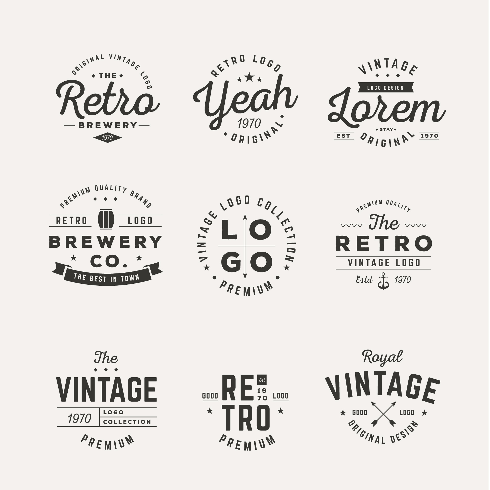

Aquí tienes un paso a paso para crear un manual de marca:
 Determina los objetivos del manual: Antes de comenzar, es importante tener claros los objetivos que quieres lograr con el manual de marca. ¿Quieres establecer directrices para el uso de los elementos de la marca? ¿Quieres asegurarte de que todos los colaboradores entiendan y apliquen correctamente la identidad de la marca en sus comunicaciones? Establece tus metas antes de comenzar.
Analiza tu marca actual: Antes de empezar a crear el manual, es fundamental tener una comprensión clara de los elementos de la marca existente. Examina el logotipo, los colores, los tipos de letra, las imágenes y cualquier otro elemento de la marca para promover una coherencia visual y de mensaje.
Define las pautas de diseño: Una parte esencial de cualquier manual de marca son las directrices de diseño. Estas directrices deben incluir el uso correcto del logotipo (tamaños, colores, ubicación), colores corporativos (con los códigos de color correspondientes), tipos de letra, estilos y tamaños de texto, y cualquier otro elemento visual que sea importante para tu marca.
Establece las pautas de comunicación: Además del diseño, también es importante establecer pautas para la comunicación escrita y verbal. Esto puede incluir el tono de voz de tu marca (formal, informal, amigable), la forma de dirigirse al público objetivo, palabras y frases que se deben utilizar o evitar, y cualquier otro elemento clave de la comunicación de tu marca.
Crea ejemplos visuales: Para ayudar a visualizar las directrices de design y comuniciación, es útil incluir ejemplos visuales en tu manual de marca. Esto puede incluir ejemplos de cómo se deben usar correctamente el logotipo en diferentes contextos, cómo deben ser las tarjetas de presentación, folletos, banners, etc. También puedes mostrar ejemplos de comunicaciones escritas para guiar a los colaboradores en el tono adecuado y el estilo de escritura.
Organiza y presenta el manual: Una vez que hayas recopilado todos los elementos necesarios, organiza el manual de manera que sea fácil de entender y seguir. Puedes dividirlo en secciones como introducción, elementos de diseño, comunicación verbal, etc. Utiliza una presentación visualmente atractiva para facilitar la lectura y comprensión del contenido.
Distribuye y actualiza el manual: Asegúrate de compartir el manual de marca con todos los miembros de tu equipo y cualquier persona que pueda necesitar acceder a él. Además, es importante recordar que la identidad de marca puede cambiar con el tiempo, por lo que asegúrate de actualizar regularmente el manual para mantenerlo relevante y útil.